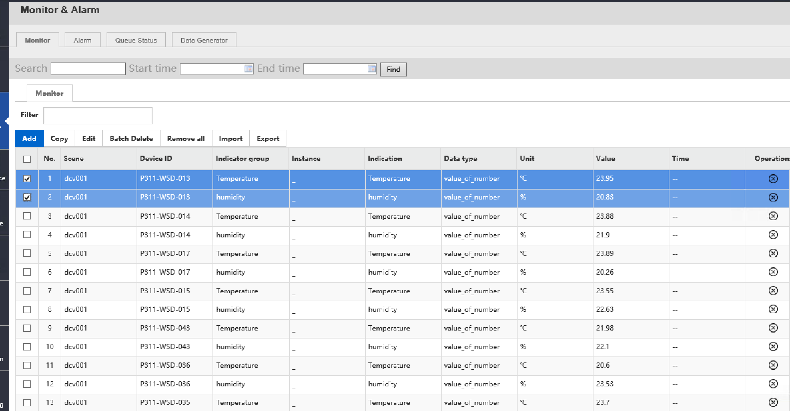
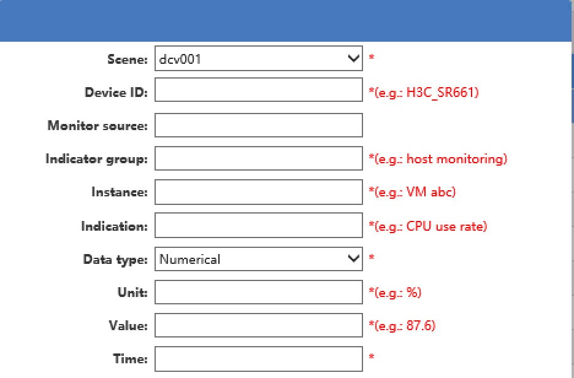
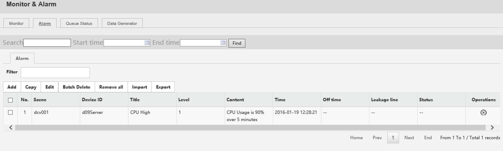
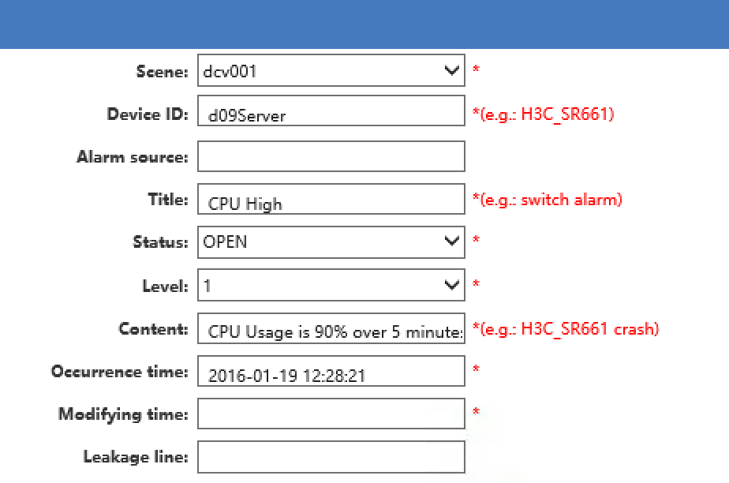
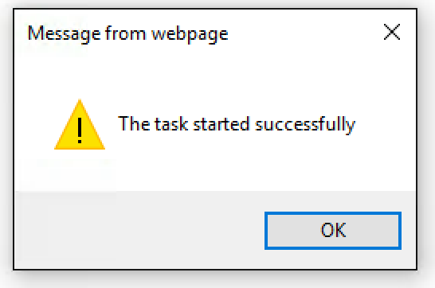
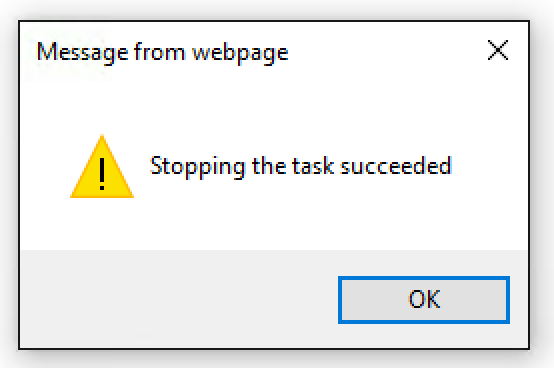

Monitor and Alarms¶
uDCV supports monitoring visualization by receive performance and alarm data from 3-party system via its open API, and show the index in realtime 3D scene. Typical data source could be:
- IT equipment performance and alerting
- Datacenter room temperature and humidity
- UPS/PDU/Air Conditioning electrical power
For more information about send performance and alarm data thought uDCV open API, please refer to uDCV Developer Guide.
Performance¶
Performance data management functions is located under Monitor and Alarm -> Monitor :
User can perform following operation on performance data as listed in table below:
| Action Name | Description |
|---|---|
| Add New Performance Data | Add performance data manually  |
| Copy | Copy one data record to an new one. |
| Edit | Edit existing data record. |
| Batch Delete | Delete selected data records. |
| Remove All | Delete ALL performance records. |
| Import | Import data from local disk file, in excel format. |
| Export | Export data to local disk file, in excel format. |
Alarms¶
Alarm data management functions is located under Monitor and Alarm -> ALarms :
User can perform following operation on alarm data as listed in table below:
| Action Name | Description |
|---|---|
| Add New Alarm Data | Add alarm data manually  |
| Copy | Copy one data record to an new one. |
| Edit | Edit existing data record. |
| Batch Delete | Delete selected data records. |
| Remove All | Delete ALL alarm records. |
| Import | Import data from local disk file, in excel format. |
| Export | Export data to local disk file, in excel format. |
Queue Status¶
Status of data processing queue can be view under Monitor and Alarm -> Queue Status . it summaries the following information:
- Queue Name
- Number of pending messages
- Number of consumers
- Messages dequeue
- Message enqueue
Data Generator¶
You may generate performance data records for assets using Data Generator for demo purpose. Data Generator function is located at Monitor and Alarm -> Data Generator. One of the typical user case is generate HeatMap data for temperature sensors.
To generate sample data, the following fields are required:
- Scene Name
- Category
- Target, either
logic serverorTemperature and Humidity, or both
| Action Name | Description |
|---|---|
| Run | Start the Data Generator  |
| Stop | Stop the Data Generator  |
{kind=link}
{kind=link}